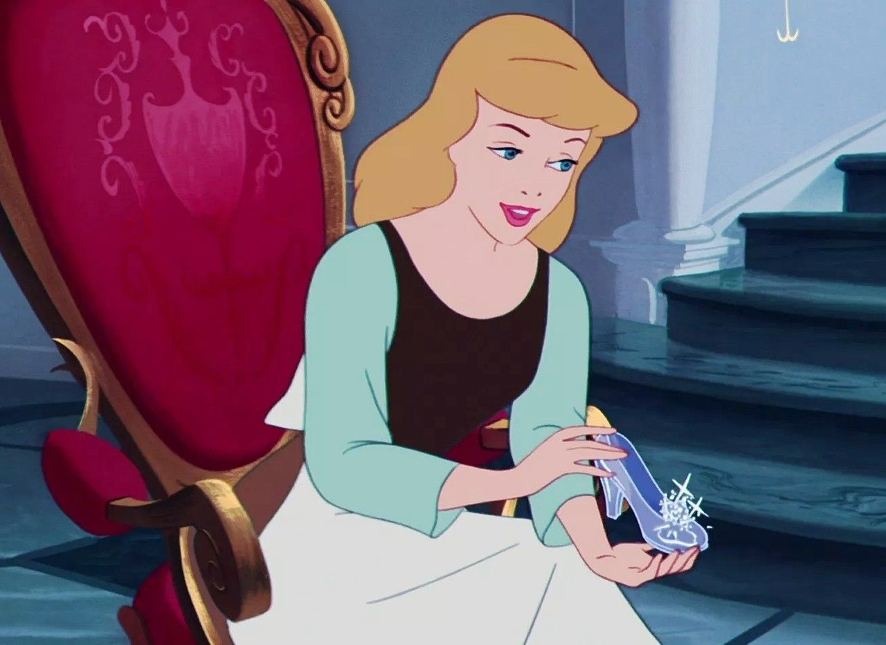

Confira a seguir as principais curiosidades sobre a franquia!
Até o momento, Branca de Neve permanece sendo a princesa mais jovem entre todas as personagens. Em sua história, ela possui apenas 14 anos.
Merida é a única que possui irmãos, sendo eles três mais novos: Harris, Hubert e Hamish, os príncipes de DunBroch.
A Disney possui a numeração exata do sapato da Cinderela, Seguindo a numeração dos Estados Unidos, os sapatos da princesa são do tamanho 4.5, equivalente ao número 33 no Brasil.
Ludmila Apolinário e Isabelle Myura | DSNT1N | Prof.° Oscar | Programação Web